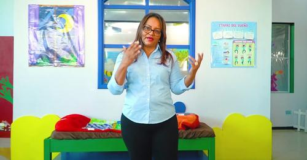
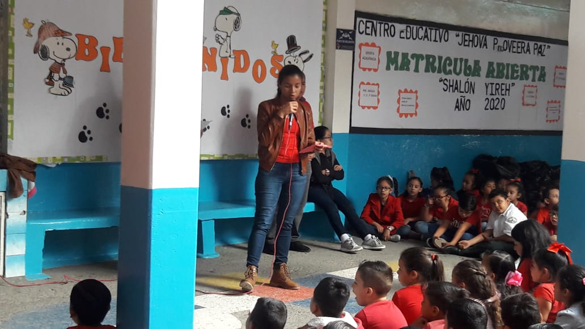
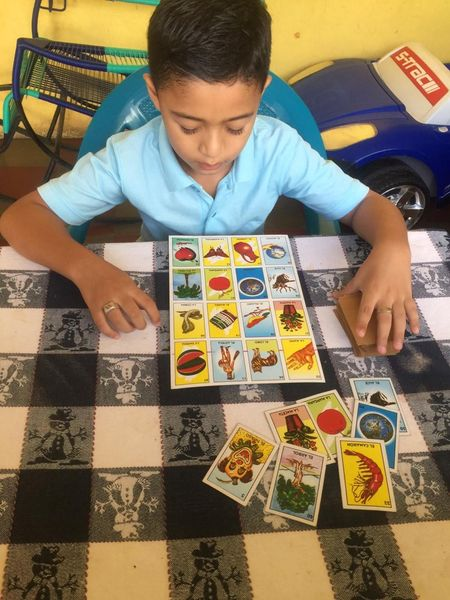

Te Queremos Estudiando
En nuestra institución, creemos firmemente en el poder transformador de la educación. 'Te Queremos Estudiando' es más que un lema, es nuestro compromiso contigo. Buscamos crear un entorno donde cada estudiante se sienta motivado, apoyado y desafiado a alcanzar sus metas académicas. A través de programas innovadores, recursos de vanguardia y un equipo comprometido, impulsamos el amor por el aprendizaje y fomentamos un espacio donde cada alumno puede florecer y alcanzar su máximo potencial.
Campamentos Lúdicos
Los Campamentos Lúdicos en nuestra institución son mucho más que simples momentos de recreo. Representan una oportunidad única para fusionar diversión y aprendizaje. Nuestro enfoque radica en crear espacios donde el juego se convierte en una herramienta educativa poderosa. A través de actividades creativas, juegos cooperativos y desafíos estimulantes, buscamos fomentar habilidades sociales, el pensamiento crítico y la resolución de problemas, todo mientras se cultivan la imaginación y la curiosidad en cada participante.
Estrategias:
Talleres Temáticos: Organizamos talleres especializados que combinan el entretenimiento con la adquisición
de
habilidades clave, desde arte hasta ciencias y deportes.
Juegos Cooperativos: Promovemos juegos en equipo que fomentan la colaboración, la comunicación y el trabajo
en
grupo.
Exploración Creativa: Ofrecemos espacios donde los niños pueden explorar libremente, experimentar y expresar
su creatividad.
Desafíos Estimulantes: Presentamos desafíos que requieren pensamiento estratégico y resolución de problemas,
motivando a los participantes a encontrar soluciones innovadoras.
Concurso de Música Instrumental
El Concurso de Música Instrumental en nuestra institución es un evento que celebra la expresión artística y el virtuosismo musical. Nos enorgullecemos de ofrecer una plataforma donde talentosos músicos instrumentales tienen la oportunidad de exhibir sus habilidades, cautivando a audiencias con interpretaciones emotivas y magistrales
Este concurso no solo busca reconocer el talento, sino también inspirar y nutrir el amor por la música instrumental. Desde piezas clásicas hasta contemporáneas, invitamos a los participantes a sumergirse en un universo de melodías y armonías, explorando la profundidad y la emoción que cada instrumento puede transmitir.
Ideas para Recaudación de Fondos
Eventos Culturales o Artísticos: Organiza conciertos, exposiciones de arte, obras de teatro o proyecciones
de
películas. Invita a la comunidad a participar y compra de entradas o donaciones voluntarias pueden
contribuir
a la causa.
Subastas o Ventas Benéficas: Recolecta donaciones de obras de arte, artículos donados por la comunidad o
servicios y organiza una subasta o venta benéfica en línea o presencial.
Servicios o Talleres Benéficos: Ofrece clases o talleres de interés general (cocina, manualidades, baile,
etc.) con una tarifa de participación. Los ingresos se destinan a la recaudación de fondos.
Días Temáticos o Semanas de Concienciación: Organiza días temáticos en la institución o campañas semanales
para crear conciencia sobre la causa. Recauda fondos a través de actividades específicas para cada día o
semana.
Rifas o Sorteos: Vende boletos para rifas o sorteos de artículos donados por empresas o individuos. El premio puede ser un incentivo adicional para la participación.
Donaciones
Donaciones Recibidas:
Donaciones Monetarias: Contribuciones financieras directas de individuos, exalumnos, empresas o fundaciones
que apoyan financieramente a la institución.
Donaciones en Especie: Pueden incluir equipos tecnológicos, libros, materiales educativos, mobiliario
escolar
o incluso servicios ofrecidos de manera gratuita por empresas locales.
Becas y Fondos para Estudiantes: Patrocinio de becas académicas o ayuda financiera para estudiantes con
dificultades económicas.
Donaciones con Fines Específicos: Algunas donaciones pueden estar dirigidas a proyectos específicos, como la
renovación de un laboratorio, la creación de una biblioteca, etc.
Donaciones Realizadas por la Institución:
Programas de Responsabilidad Social: La institución puede iniciar programas que involucren a los estudiantes
en actividades comunitarias, recaudación de fondos para organizaciones benéficas, proyectos ecológicos,
entre
otros.
Becas y Ayuda Financiera: La institución puede establecer fondos de becas internos para apoyar a estudiantes
talentosos o con necesidades financieras.
Recursos Educativos para la Comunidad: Compartir recursos educativos, bibliotecas o espacios de aprendizaje
con la comunidad local.
Eventos de Concienciación y Recaudación de Fondos: Organizar eventos para recaudar fondos destinados a
causas
benéficas o necesidades específicas de la comunidad educativa.